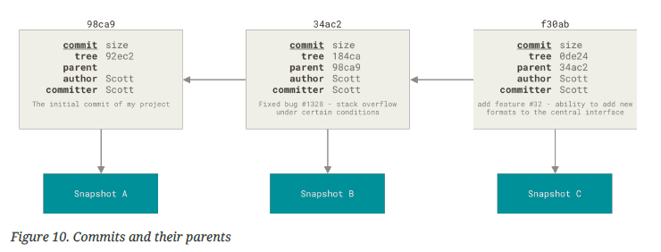
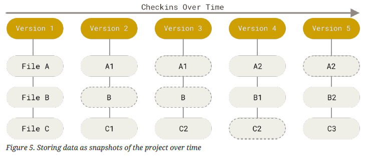
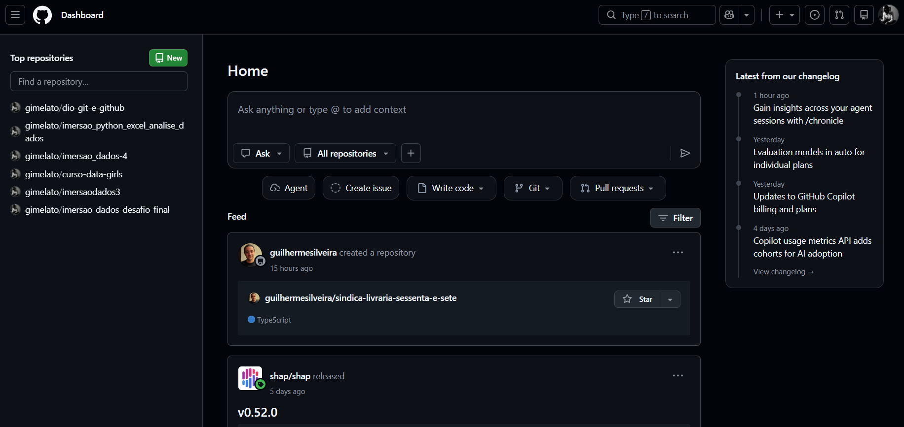

GitHub

Origem e Funcionalidade
Seminário – Sociedade e Tecnologia
Autores:
Lucas • Giovanna • Rafael
Introdução ao Controle de Versão e Timeline Histórica
- Controle de versão (VCS) é o registro histórico de alterações em arquivos, permitindo recuperar estados anteriores e colaborar com segurança. Desde os anos 1970 diversas ferramentas surgiram: inicialmente sistemas locais como o SCCS (1972) e RCS (1982) mantinham apenas cópias com código-fonte antigo; depois, sistemas centralizados como CVS (década de 1990) e Subversion (2000) introduziram um servidor único com histórico de versões compartilhado.
- Apesar dos avanços, ambos os modelos anteriores tinham limitações de escalabilidade e de ponto único de falha. Em 2005 surgiu então o sistema distribuído de controle de versão (DVCS): no DVCS (como Git, Mercurial, Bazaar etc.), cada usuário baixa todo o histórico do projeto para sua máquina, tornando cada clone um backup completo. Isso garante colaboração contínua mesmo se o servidor central cair.
- A motivação para criar o Git, estava ligada à experiência de desenvolvimento do Linux; já o GitHub nasceu para facilitar o uso do Git em equipe, adicionando recursos sociais (versionamento aberto, compartilhamento de código, revisões). Ambos se tornaram peças centrais na cultura de desenvolvimento de software.
Git: Origem e Funcionamento Técnico

- O Git é um sistema de controle de versão distribuído, criado em 2005 pelo programador Linus Torvalds (criador do Linux). Na época, o Linux mantinha seu código no BitKeeper, mas após a revogação do acesso gratuito surgiu a necessidade de uma alternativa livre. Linus projetou então o Git em poucos dias, priorizando velocidade, design simples e suporte eficiente a desenvolvimento não-linear (múltiplos branches).
- O Git nasceu para atender às necessidades do desenvolvimento do kernel Linux, substituindo o BitKeeper e permitindo versionamento totalmente distribuído e de código-aberto. As metas iniciais eram: alto desempenho, flexibilidade de branches e repositórios autônomos. Desde então o Git evoluiu para se tornar padrão global no versionamento de código aberto.
Conceitos fundamentais:
- Commit (snapshots): Cada commit registra o estado do projeto em determinado momento (um “salvamento” no histórico). O Git armazena objetos que representam o conteúdo e metadados, preservando integridade pelo uso de hashes.

- Branch (ramificação): Um branch no Git é uma linha de desenvolvimento paralela. Tecnicamente, um branch é um ponteiro móvel para commits sequenciais. Usar branches permite que desenvolvedores “testem coisas novas” isoladamente, sem afetar o ramo principal (geralmente chamado main ou master). Quando as mudanças estão prontas, faz-se um merge (união) ou uma pull request no caso de colaboração por repositório remoto.

- Merge (mesclagem): O Git permite unir dois branches, combinando históricos de desenvolvimento. Seu algoritmo inteligente minimiza conflitos e preserva um histórico acíclico. Em caso de conflito, o Git sinaliza trechos a serem ajustados manualmente.
- Repositório (repo) e Clonagem: Um repositório Git é o conjunto de diretórios e arquivos versionados junto com o histórico. Cada clone de um repositório contém TODO o histórico de versões, diferentemente de sistemas centralizados que apenas fornecem a versão mais recente. Assim, o Git permite operações offline e não depende da conexão permanente com um servidor.

- A capacidade de múltiplos branches e a duplicação local do repositório foram motivadores-chaves para sua adoção. Após sua criação, o Git foi rapidamente adotado por muitos projetos além do Linux, tornando-se uma “ferramenta padrão” de versionamento.
- Em resumo, o Git trouxe à tona um modelo descentralizado de versionamento, permitindo que equipes colaborem sem risco de “perder tudo” e com grande flexibilidade de desenvolvimento paralelo.
GitHub: Plataforma Social de Hospedagem Git
- O GitHub é um serviço online fundado em 2008 com o objetivo de hospedar repositórios Git e facilitar a colaboração. Desenvolvido inicialmente em Ruby on Rails pelos engenheiros Tom Preston-Werner, Chris Wanstrath, PJ Hyett e Scott Chacon, o GitHub tornou-se rapidamente o principal ponto de encontro de desenvolvedores. Desde seu lançamento em abril de 2008, a plataforma cresceu exponencialmente. Em 2018 o GitHub foi adquirido pela Microsoft por US$7,5 bilhões, mas continuou operando de forma autônoma.
- Segundo a própria definição, o GitHub é “uma plataforma de hospedagem de código-fonte e arquivos com controle de versão usando o Git”. Na prática, ele funciona como rede social para desenvolvedores, permitindo que programadores de qualquer lugar publiquem seus projetos públicos, colaborem em equipe e acompanhem projetos alheios (via “fork” e “pull request”).

Principais funcionalidades e benefícios do GitHub:
- Repositórios Remotos e Forks: GitHub hospeda repositórios na nuvem, acessíveis via navegador ou Git. Qualquer usuário pode “dar fork” em um repositório existente, criando sua cópia independente para experimentação sem afetar o projeto original.
- Issue Tracker: Cada repositório tem um sistema de issues (problemas) para relatar bugs, novas funcionalidades ou dúvidas. Isso organiza o trabalho em andamento e documenta o progresso.
- Pull Requests e Revisão de Código: Após fazer alterações em um fork ou branch, desenvolvedores podem abrir pull requests, solicitando que suas mudanças sejam revisadas e incorporadas ao projeto principal. Ferramentas integradas permitem discutir cada alteração, comentar linhas específicas e controlar a qualidade antes do merge.
- Integração Contínua (CI/CD) – GitHub Actions é um mecanismo embutido que executa tarefas automatizadas (testes, builds, deploy) sempre que há novas alterações. Isso permite integração contínua onde o código é automaticamente testado e implantado conforme o desenvolvimento avança.
- Documentação e Wikis: Cada repositório pode incluir páginas de documentação (por exemplo, README) ou até wikis colaborativas, facilitando a criação de portfólios técnicos e guias de uso.

- Comunidade e Aprendizado: GitHub incentiva colaborações públicas: projetos de código aberto recebem contribuições de diversas pessoas. Além disso, a plataforma incentiva “networking” entre desenvolvedores, tendo sido descrita como um “portfólio global do programador”. Há recursos para perfis pessoais, seguidores e recomendações de projetos.

- Em todos esses aspectos, o GitHub se beneficia de ter o Git como base (garantindo histórico e ramificações poderosas) e adiciona a ele uma camada de colaboração humana e operacional.
Git vs. GitHub
Como resumo, podemos distinguir Git e GitHub em termos de função e uso:
- Git é a ferramenta de controle de versão: um software instalado localmente que gerencia histórico de código (commits, branches, merges etc.). Ele funciona offline e não depende de serviços externos.
- GitHub é um serviço on-line baseado no Git: armazena repositórios Git na nuvem, fornece interface web, colaboração social e recursos adicionais (issues, pull requests, Actions, etc.).
- Em outras palavras, pode-se pensar que Git é o mecanismo subjacente que rastreia mudanças nos arquivos, enquanto GitHub responde é a plataforma que hospeda projetos que usam Git e facilita interações sociais.